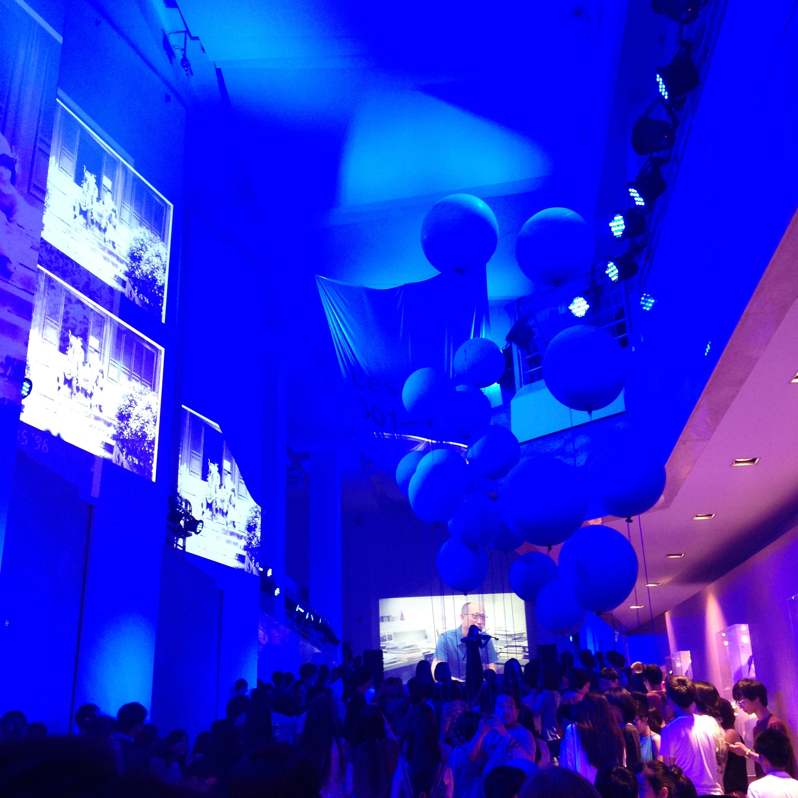

//// Best Years ////



* an exhibition visual identity system design
* keywords: graduation exibition guide book
* 2014
* team work
* poster: 594mm × 941mm
* guide book: 105mm × 185mm
* website: http://designyearshow.cafa.edu.cn/2014/
This is an exhibition for undergraduate students. Every year our school will hold a big exhibition for the students who will graduate from the university as a present. This exhibition will attract lots of people to focus CAFA. The theme in 2014 is The Best Years which quotes from A Tale of Two Cities written by Charles Dickens.
All the students are faced with the challenge of the unknown future which is the best but it was also the worst, and it is the same of the description of Dickens's words. So that we began our exhibiton with this theme.
We give all the students their own number just like everyone can not be replaced. These numbers naturally turn into our guide for the route of walk. All the people can find the position precisely and immediately. Also, the number become a Logo for every students.
- Created By Cherrie Jiang -
- 09 / 2016 -